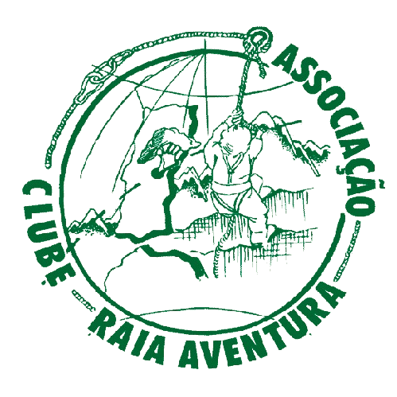
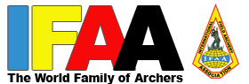
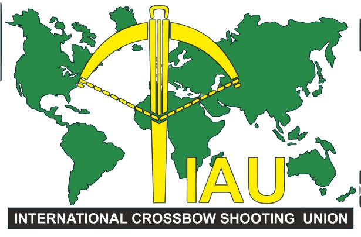
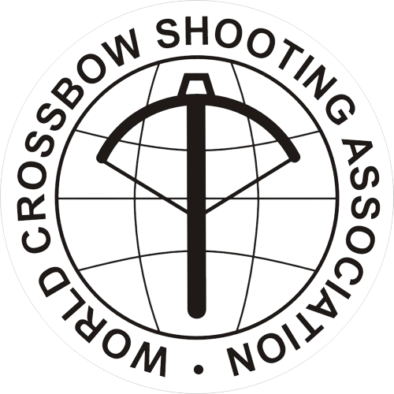
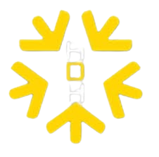

Associação Clube Raia Aventura - ACRA
raiaventura@hotmail.com
Rua das Piscinas s/n
6000-776 Castelo Branco
Dirigente Desportivo: Nuno Mateus
06-Coimbra

International Field Archery Association (IFAA) - desde 1986
International BowHunter Education Program (IBEP) - desde 1985

Internationale Armbrustschuten Union (IAU) - desde 1982

World Crossbow Shooting Association (WCSA) - desde 2003

HDH International Archery Association (HDH-IAA) - desde 2015 - desde 2003